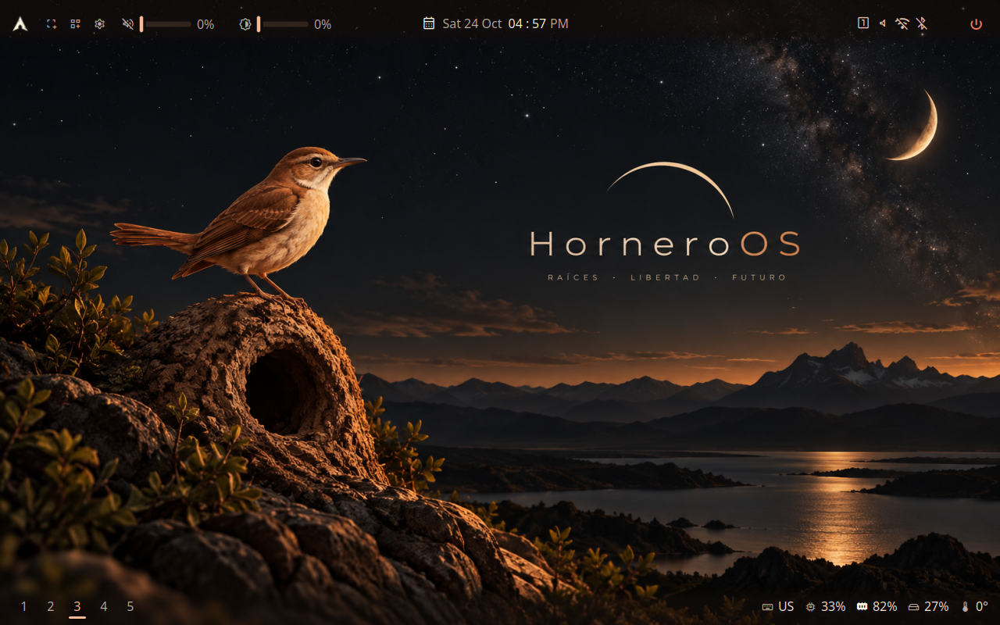

multimonitor/three-outputs PASS
20261024T165558Z-multimonitor-three-outputs-1 · attempt 1 · 74.474 s · class -
Reason: all proof checks passed
Instruction
Start the desktop with three monitors connected and inspect each screen.
Proof
| where | kind | note | detail | |
|---|---|---|---|---|
| ✅ | proof 0 | probe | ok | |
| ✅ | proof 1 | screenshot | ["001-all-three-screens-h0.png", "002-all-three-screens-h1.png", "003-all-three-screens-h2.png"] |
Product and environment
| shell_sha | 85e35a3a9db252d20a64b02096b7f3432152c30e |
|---|---|
| config_sha | 76a552f7ec56f00ed52e122150f27639a3a8d70a |
| horneroctl | horneroctl horneroctl-v0.2.0-preview29 (028a52c) |
| horneroctl_sha256 | 8e9ffd96d578543d50caa17d9449bb52e79fdf1ae90598fe417f370a263602f5 |
| engine | native |
| compositor | hyprland |
| hornero_qa | 0.1.0 |
| host_kernel | 7.2.9-arch1-1 |
| qemu | QEMU emulator version 11.1.2 |
| image | qa-display-preview29-20261024.qcow2 |
| outputs | 3 |
| resolution | 1280x800 |
Screenshots





Actions
{"t": 18.414, "kind": "ready", "serial": []}
{"t": 39.463, "kind": "setup", "run": "horneroctl shell preset apply cockpit-clear --yes", "rc": 0, "stdout": "applied preset Cockpit Clear (cockpit-clear)", "stderr": ""}
Logs: logs/ · machine-readable: run.json, result.json, assertions.json, actions.jsonl